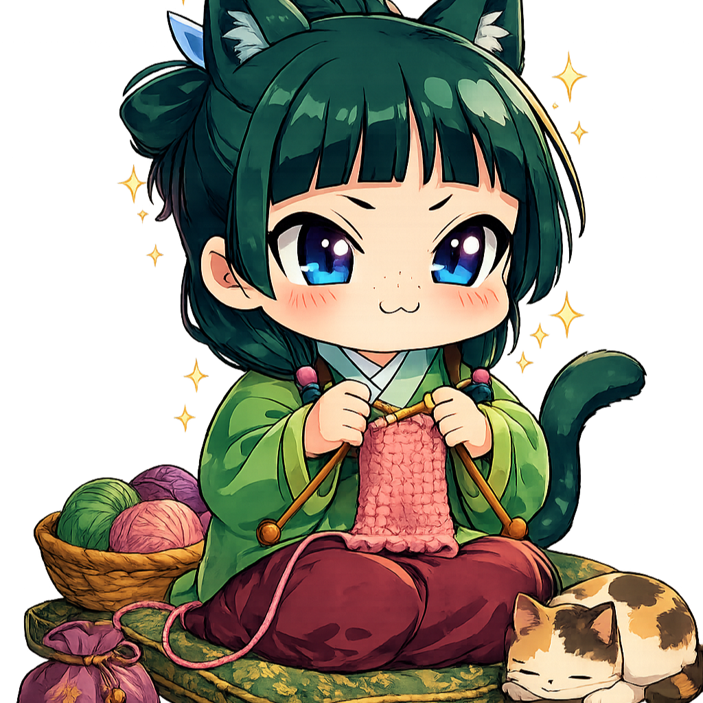
As importâncias:
Os hobbies manuais são atividades importantes porque estimulam a criatividade, a concentração e o desenvolvimento de habilidades motoras e práticas como:
⇢Crochê, bordado, pintura, colagem, trico, cerâmica, marcenaria e artesanato.
ㅤ
Elas ajudam judam a reduzir o estresse, promovem o relaxamento e proporcionam uma sensação de realização ao produzir algo com as próprias mãos.
Além disso, esses hobbies incentivam a paciência, a organização e a resolução de problemas, contribuindo para o bem-estar físico e emocional. Dessa forma, dedicar parte do tempo a atividades manuais pode melhorar a qualidade de vida e favorecer o desenvolvimento pessoal ‹3
🧶 Fios e tecidos:
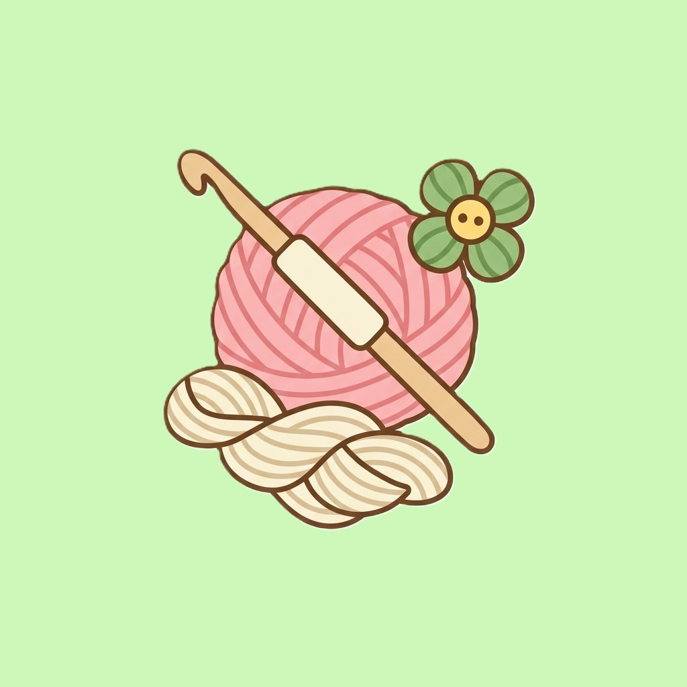
- Crochê
- Tricô
- Bordado
- Macramê
- Costura
- Tapeçaria
- Feltragem
- Patchwork
- Customização de roupas
- Tear
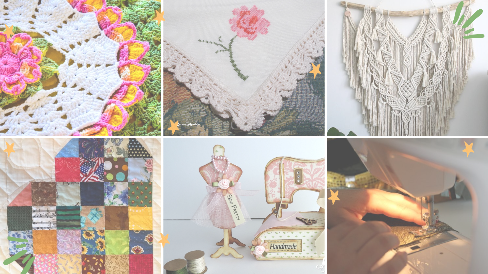
ㅤ
🎨 Artes visuais:
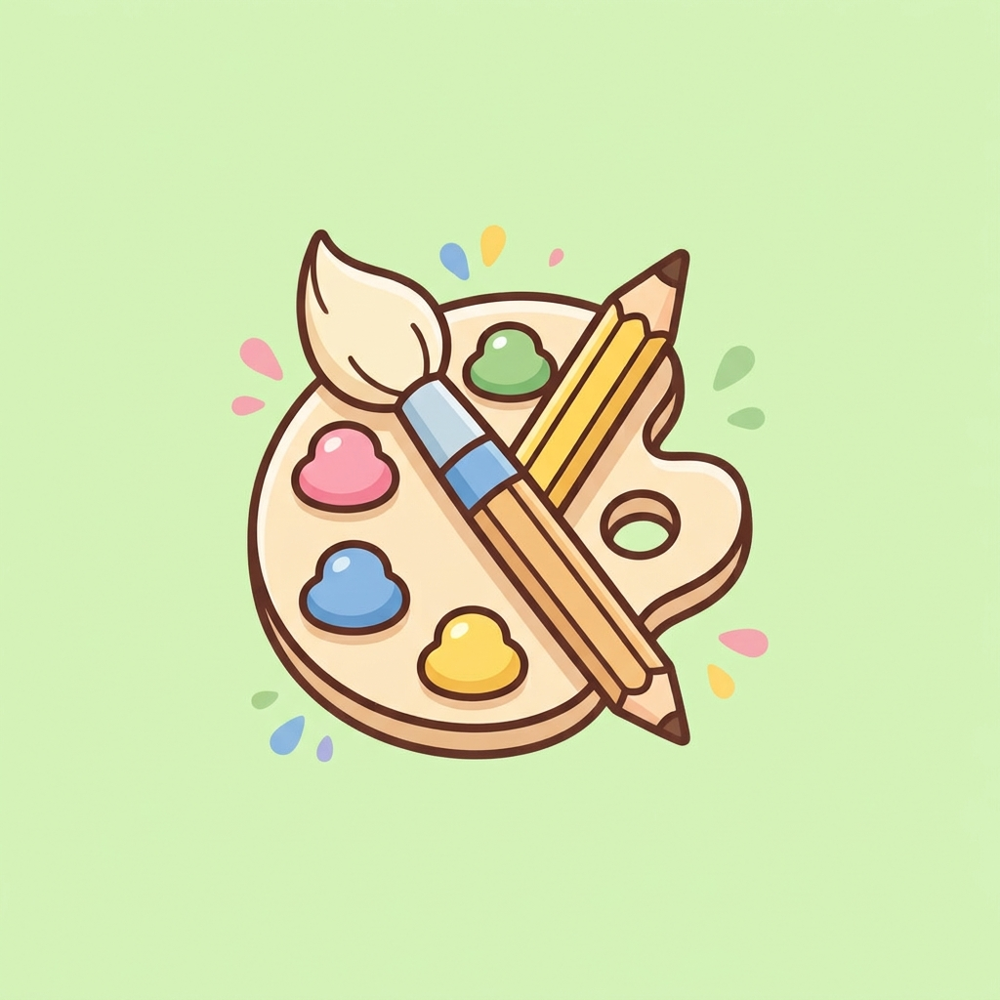
- Pintura em tela
- Aquarela
- Guache
- Desenho
- Ilustração
- Pintura em tecido
- Gravura
- Colagem
- Caligrafia
- Lettering
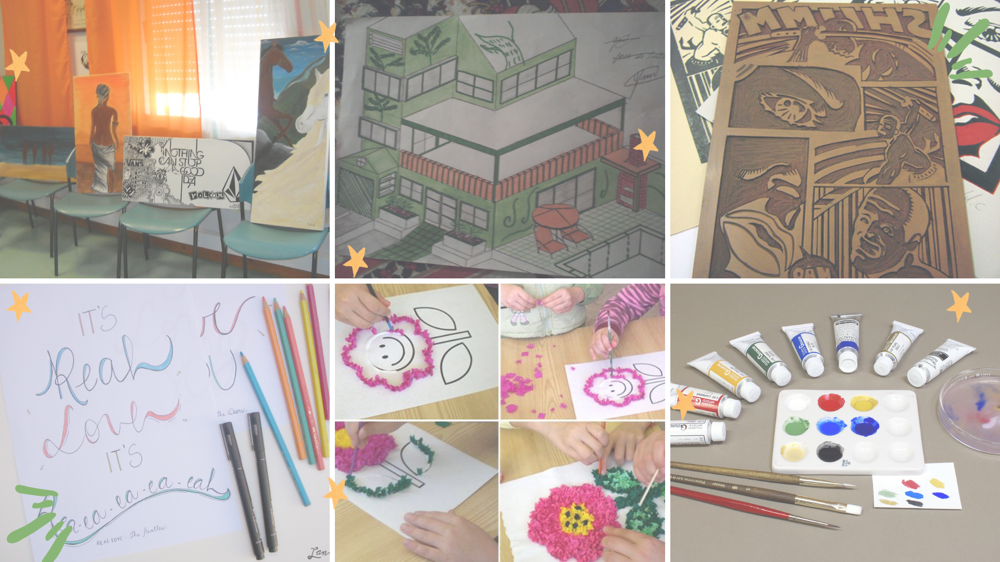
🏺 Artesanato e modelagem:
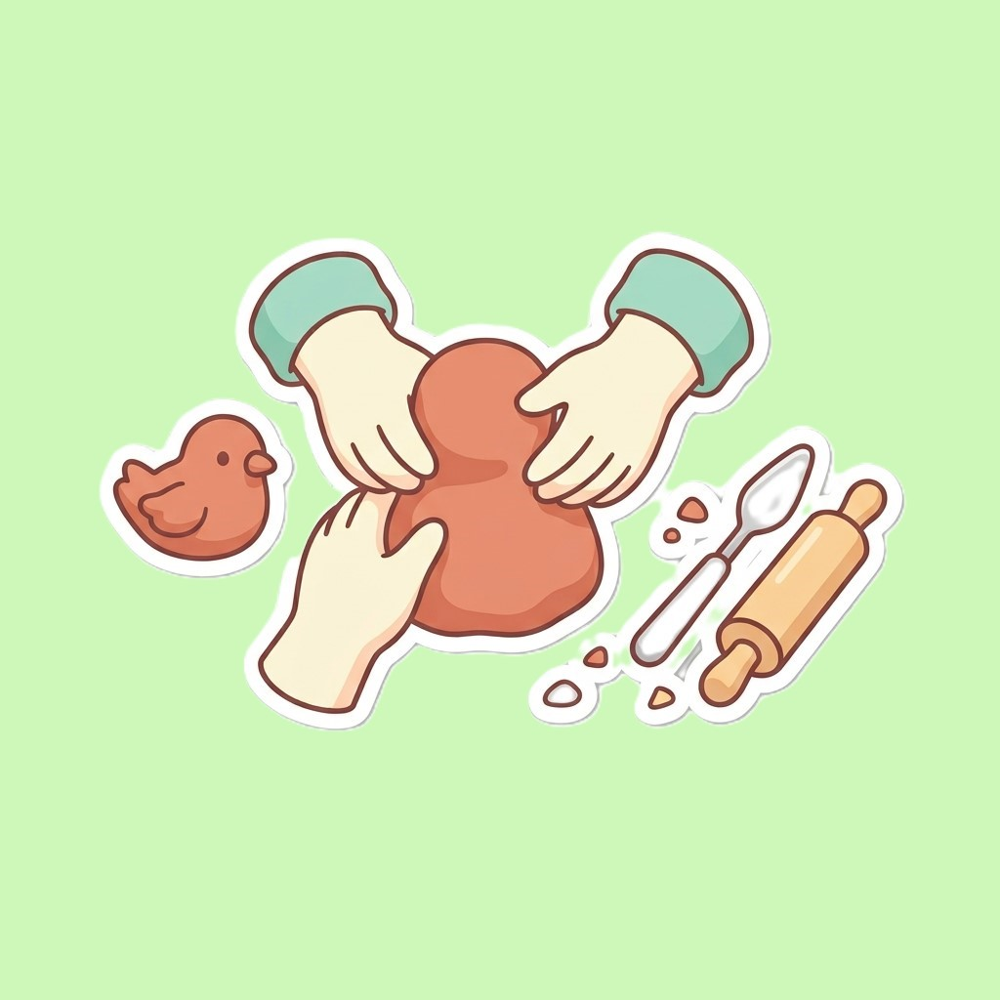
- Cerâmica
- Modelagem em argila
- Escultura
- Biscuit
- Modelagem em massa
- Origami
- Papel machê
- Encadernação artesanal
- Quilling
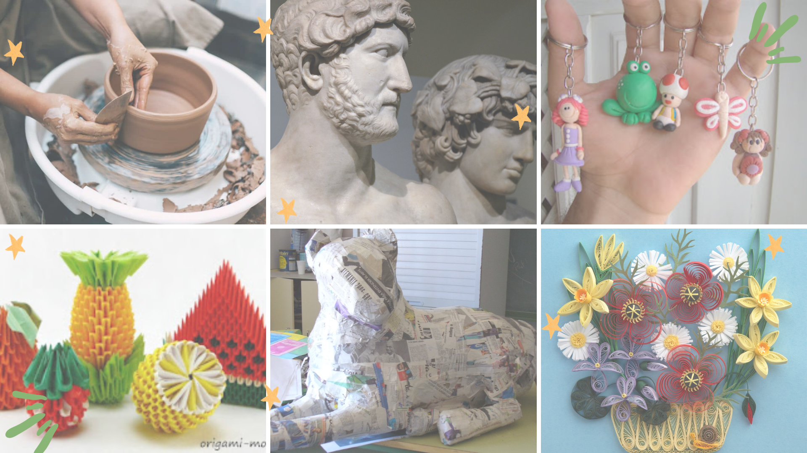
🌿 Artesanato com elementos naturais
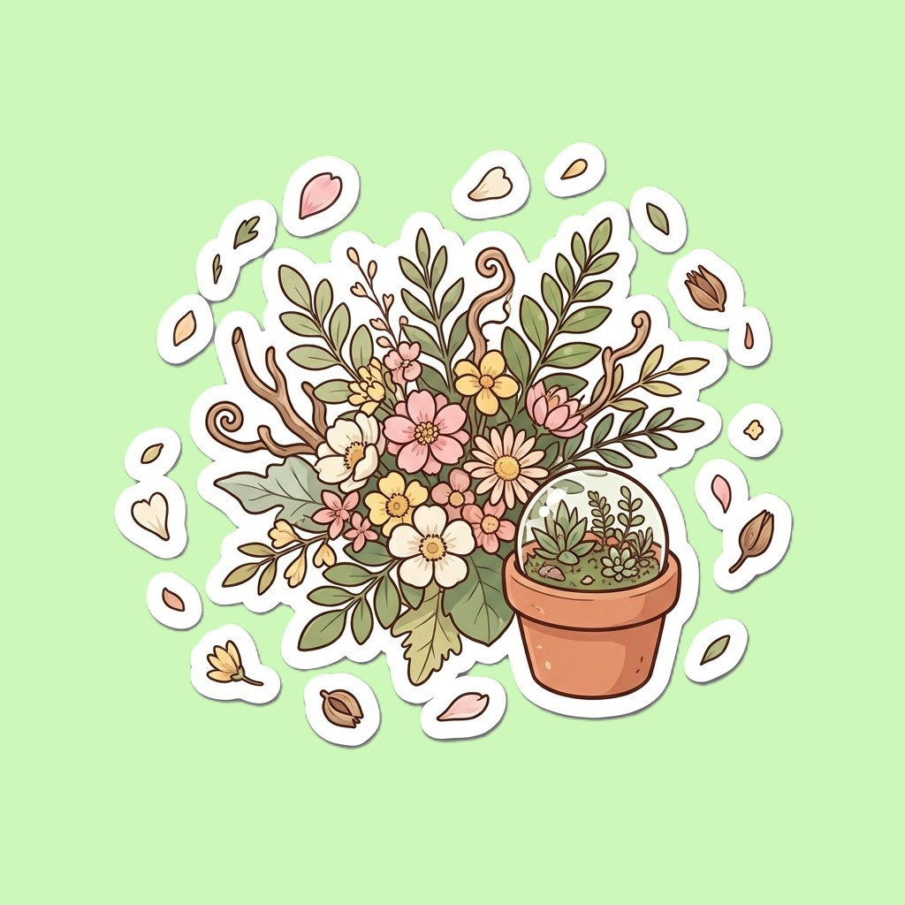
- Arranjos de flores
- Prensagem de flores
- Jardinagem
- Terrários
- Confecção de velas
- Sabonetes artesanais
- Arranjos com folhas e galhos
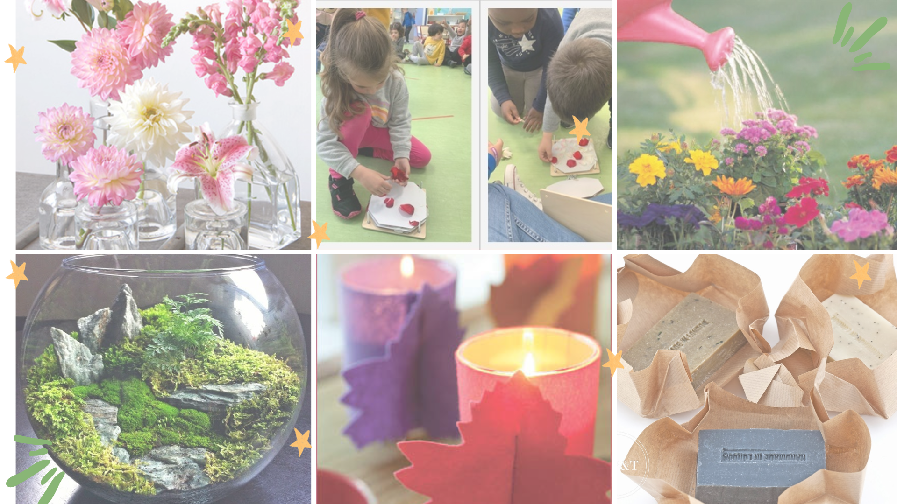
👐Trabalhos manuais
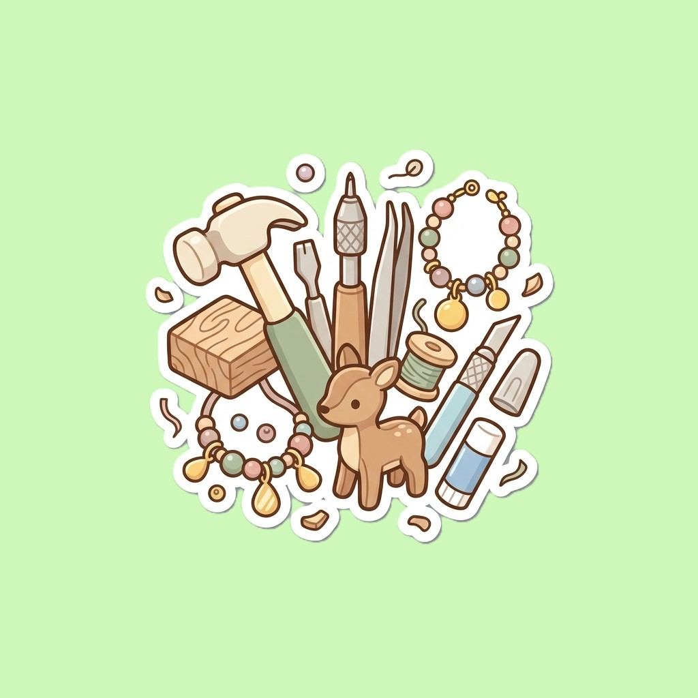
- Marcenaria
- Entalhe em madeira
- Pirografia
- Restauração de móveis
- Construção de miniaturas
- Modelismo
- Confecção de bijuterias
- Joalheria artesanal
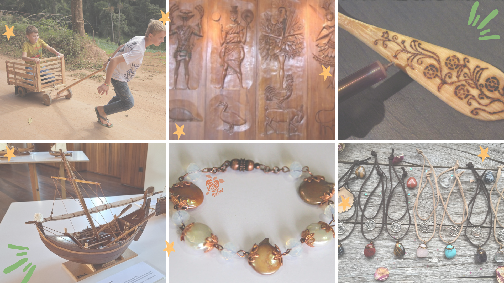
🧵 Outros hobbies criativos
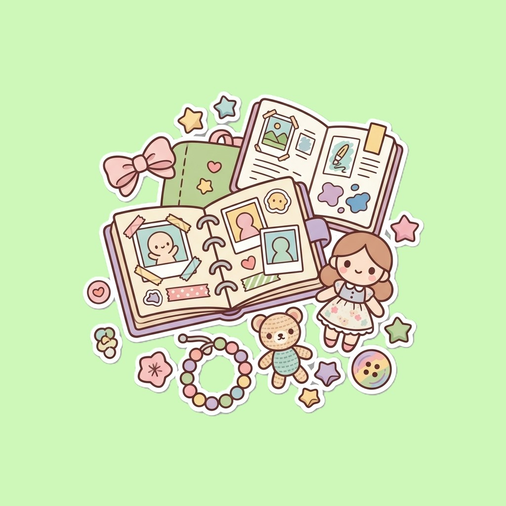
- Scrapbooking
- Diário artístico (art journal)
- Scrapbook
- Criação de bonecas
- Amigurumi
- Confecção de acessórios
- Customização de objetos
- DIY/decoração artesanal
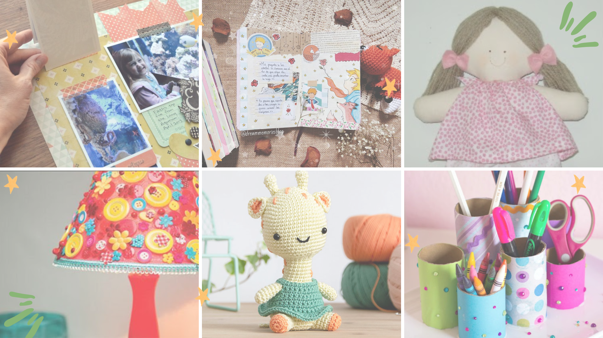